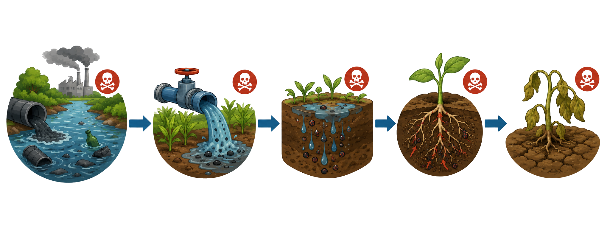

小葵体检状态
污染路径

点击上方步骤，查看污染如何一步步影响植物生长
植物受害表现
根系腐烂
有毒物质在根系中持续积累，细胞坏死、组织腐烂——根系正在从内部瓦解。重金属离子（如镉、铅）通过根毛细胞壁的孔道进入根系，与细胞膜上的巯基（-SH）结合，使膜蛋白变性、膜透性增大，细胞内容物外渗，最终导致组织坏死变黑。
叶片下垂
根系吸水能力骤降，叶片因"干渴"而无力下垂，失去了原本挺拔的姿态。正常植物依靠根系产生的根压和蒸腾拉力维持水分运输，当根系受损面积超过30%时，蒸腾流中断，气孔被迫关闭以减少失水，但这也意味着CO₂无法进入——光合作用随之骤降。
生长缓慢
矿物质与养分供应断绝，整株植物的生长陷入停滞——矮小、瘦弱、无法开花。氮、磷、钾等必需元素的吸收受阻，细胞分裂素合成减少，细胞伸长受抑制。研究显示，受镉污染的水稻株高可降低20-40%，生物量减少30-50%。
水体污染物伤害机制详解
重金属：根系的无形杀手
伤害原理：水体中的重金属（Cd、Pb、Hg、Cr等）通过根系吸收进入植物体内。镉（Cd）是最具毒性的重金属之一，它与锌（Zn）化学性质相似，通过锌转运蛋白"骗过"根系进入植物体内。进入细胞后，镉离子与蛋白质巯基结合，导致多种酶失活，同时诱导产生大量活性氧（ROS），引发膜脂过氧化。
关键数据：土壤镉含量超过0.3 mg/kg（中国土壤环境质量标准风险筛选值）即对敏感植物产生毒害；水培条件下，1-10 μM Cd²⁺即可显著抑制根系伸长。铅（Pb）在植物组织中超过10-30 mg/kg即出现毒害症状。中国约16.1%的耕地土壤受到不同程度的重金属污染。
伤害链：重金属进入根毛 → 竞争性抑制必需元素吸收 → 巯基酶失活 → 活性氧爆发 → 膜脂过氧化 → 根尖分生区细胞死亡 → 根系变短变黑
富营养化：窒息的水体
伤害原理：农业面源污染导致大量氮磷进入水体，引发富营养化。藻类过度繁殖形成"水华"，覆盖水面阻挡阳光，沉水植物因光照不足而死亡。更严重的是，藻类夜间呼吸和死亡分解消耗大量溶解氧，导致水体缺氧甚至厌氧，水生植物根系在缺氧环境中进行无氧呼吸，积累乙醇等有毒代谢产物。
关键数据：当水体总氮超过0.2 mg/L、总磷超过0.02 mg/L时即可发生富营养化。中国湖泊富营养化比例高达70%以上，太湖、滇池等大型湖泊长期受此困扰。富营养化水体中溶解氧可降至2 mg/L以下（正常值应>5 mg/L），水生植物根系几乎无法存活。
持久性有机污染物：隐形的化学入侵
伤害原理：农药、工业废水中的持久性有机污染物（POPs）具有难降解、生物蓄积的特性。有机氯农药（如DDT）虽已被禁用多年，但在土壤和水体中仍可检出。这些物质通过根系进入植物后，干扰植物激素平衡，抑制细胞分裂，影响花器官发育。
关键数据：POPs在环境中的半衰期可达数年至数十年，DDT在土壤中的半衰期约2-15年。它们通过食物链逐级放大，浓度可放大10万倍以上（生物放大效应）。即使是极低浓度（μg/L级），长期暴露也可导致植物生殖能力下降。